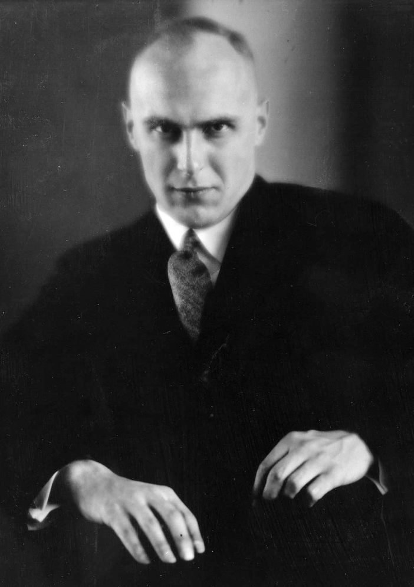

Ernst von Salomon

-
Die Geächteten (translated as The Outlaws) (1930)
-
Die Stadt ("The City" – translated as It Cannot Be Stormed) (1932)
-
Die Kadetten ("The Cadets") (1933)
-
Putsch ("Coup d'État") (1933)
-
Der Fragebogen (The Questionnaire or Answers to the 131 Questions of the Allied Military Government.) (Germany 1951). English edition, by Putnam, London, 1954.
-
Die schöne Wilhelmine ("The Beautiful Wilhelmine") (1965)
-
Der tote Preuße ("The Dead Prussian") (1973)